セミナーカリキュラム
5年で3倍の医院規模に
拡大させる
経営のしかた
今後はう蝕や歯周病の減少だけではなく、人口減少も進行します。先行き見えない中でも医院規模を拡大する必要性とその方法をお伝えします。
予防歯科を推進する
健康者マーケティング
予防歯科は健康者が対象です。
どうしたら健康者が来院し継続的に通ってくれるのか、マーケティングについてお話しします。
主体的に働くスタッフの育成、
定着化をはかる教育方法
院長先生の悩みは人です。しかし、業界内でスタッフの教育方法を学べる環境はほとんどありません。その教育知識についてお伝えします。
ビジョンと目標をかなえる
院長の時間とお金のつかい方
医院のビジョンと目標のつくり方から、
医院規模別に適切な院長の時間とお金の使い方を紹介します。
時流の変化に合わせた
自費の増収・増益方法
生活者ニーズが右肩上りで、コロナ禍でも強いのが審美歯科です。時流に合わせた自費の増収・増益方法をお伝えします。
院長が頑張らずともまわる
医院組織のつくり方
数カ月間、医院を離れても安心ですか？
院長依存から脱却する医院組織を作る経営者の5つの役割をお伝えします。
セミナー講師
ホワイトエッセンス本部
代表取締役坂本 佳昭
日本最大の審美歯科チェーン「ホワイトエッセンス」の創業者。著書「院長依存から脱却できる医院組織のつくり方」は、歯科医院経営に特化した内容であるにも関わらず、有名大手書店でビジネス書売上ランキング1位を獲得。斬新なビジネスモデルや経営手法が注目され、国内外問わず取材や講演実績は多数。
FC事業本部
新店営業課マネージャー
森山 滋満
決算書をもとにした医院経営分析、院長の時間管理術、スタッフとのコミュニケーションについてメソッドを持ち、数多くの医院組織の改革に貢献してきた人物。歯科を取り巻く社会環境やデータを用いた医院コンサルが開業医から支持されている。
FC事業本部 新店営業課マネージャー
藤田 広樹
加盟院の開業後を担当し、ユニット3台の小規模院から年商10億円を超える大型医院まで収益を確実に伸ばした実績を持つ。医院を組織化に導くスタッフマネジメントの成功事例を豊富に持ち、院長に寄り添いながら医院課題を解消してきた人物。
リアル（会場）セミナーと
オンライン版セミナー
いずれかを選択の上ご参加下さい
リアル（会場）セミナーに
お勧めの方
- 会場周辺（東京、名古屋、大阪、博多）にお住まいの方
- 1日で学び終えたい方
- 複数の開催日程から参加日を決めたい方
- 以前、他社のオンラインセミナーを受講し、リアルのほうが内容が身につくと思われた方
- デジタルツールの使用が苦手な方
※人数制限を設け、検温、消毒、マスク着用、ソーシャルディスタンスの確保を徹底しております
オンライン版セミナーに
お勧めの方
- 開催会場から遠距離にお住まいの方
- コロナ渦による影響で参加が難しい方
- 一人の方が集中できると思われる方
- まとまった時間が取りにくい方
セミナー日程
※オンライン版セミナーは有料開催
| 開催日 | 会場 | 時刻 | |
|---|---|---|---|
| 3月10日(水) | オンライン（全２回） | 前半：10:00～12:00 ※後半は3月14日（日）10:00～12:00 |
申し込む
参加費：11,000円（税込） |
| 3月11日(木) | オンライン（全２回） | 前半：10:00～12:00 ※後半は3月14日（日）10:00～12:00 |
申し込む
参加費：11,000円（税込） |
| 3月14日(日) | ブリーゼプラザ （西梅田駅より徒歩3分） |
11:30～16:00 | 無料で申し込む |
| 3月28日(日) | 名古屋ルーセントタワー （名古屋駅より徒歩5分） |
11:30～16:00 | 無料で申し込む |
| 4月4日(日) | ACU-H （博多駅より徒歩3分） |
11:30～16:00 | 無料で申し込む |
| トラストシティ カンファレンス・京橋 （東京駅より徒歩4分） |
11:30～16:00 | 無料で申し込む | |
| 4月8日(日) | ホワイトエッセンス本部 （渋谷駅より徒歩7分） |
11:30～16:00 | 無料で申し込む |
| 4月11日(日) | ブリーゼプラザ （西梅田駅より徒歩3分） |
11:30～16:00 | 無料で申し込む |
| 4月18日(日) | 名古屋ルーセントタワー （名古屋駅より徒歩5分） |
11:30～16:00 | 無料で申し込む |
なぜ無料で
開催しているのか？
※オンライン版セミナーは有料開催
セミナーで提供している
歯科医院
経営の本質やノウハウ
に対して
お金で価値を
付けたくないからです
加盟院215院の実績を持つ日本最大の
審美歯科チェーンホワイトエッセンス。
その代表である坂本が開業してから
18年で培った歯科医院経営の
本質・ノウハウ。
その価値は手前味噌ではありますが、
お金では測ることの出来ないものである
と考えています。
これまで18年間、私どもが継続的に成長
できたのは、歯科医師の先生方の応援と
支えがあったからこそでした。
歯科業界への恩返し、そして
デンタルエステの裾野を広げるため
無料でセミナーを開催しております。
※一切こちらからフランチャイズ加盟を勧誘することはありませんので、ご安心下さい。
参加者感想
-
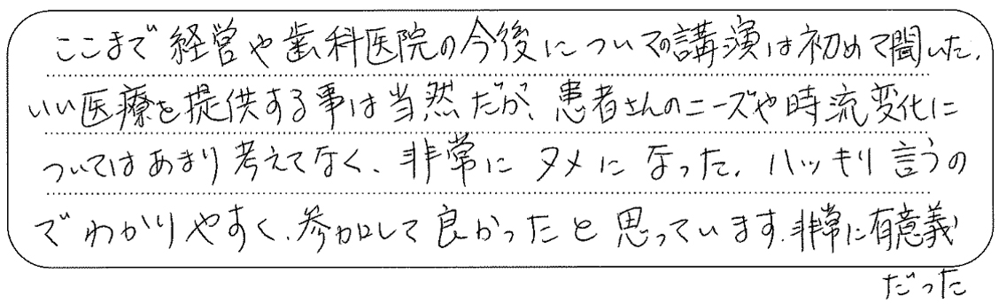
ここまで経営や歯科医院の今後についての講演は初めて聞いた。いい医療を提供する事は当然だが、患者さんのニーズや時流変化についてはあまり考えてなく、非常にタメになった。ハッキリ言うのでわかりやすく、参加して良かったと思っています。非常に有意義だった。
富山県富山市 開業医 50歳
-
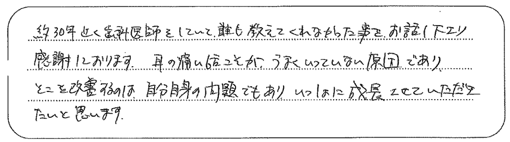
約30年近く歯科医師をしていて、誰も教えてくれなかった事を、お話し下さり感謝しております。耳の痛い話こそが、うまくいっていない原因であり、そこを改善するのは、自分自身の問題でもあり、いっしょに成長させていただきたいと思います。
東京都豊島区 開業医 50歳
-
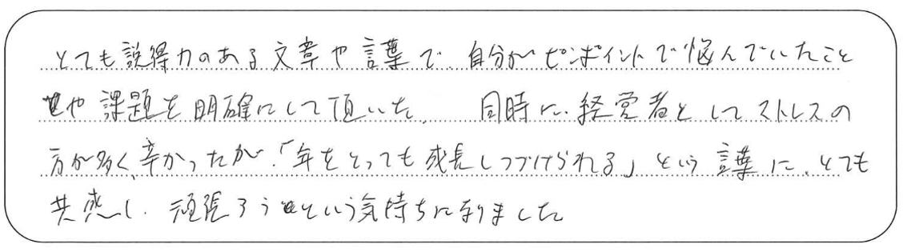
とても説得力のある文章や言葉で、自分がピンポイントで悩んでいたことや課題を明確にして頂いた。同時に経営者としてストレスの方が多く、辛かったが「年をとっても成長しつづけられる」という言葉に、とても共感し、頑張ろうという気持ちになりました。
大阪府東大阪市 開業医 40歳
-
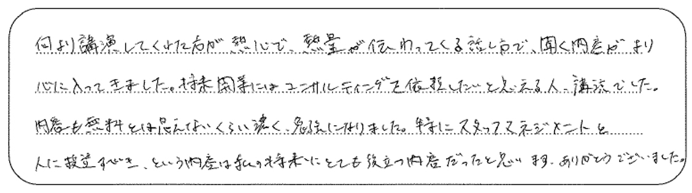
何より講演してくれた方が熱心で、熱量が伝わってくる話し方で、聞く内容がより心に入ってきました。将来開業にはコンサルティングを依頼したいと思える人、講演でした。内容も無料とは思えないくらい濃く、勉強になりました。特にスタッフマネジメントと人に投資すべき、という内容は私の将来にとても役立つ内容だったと思います。ありがとうございました。
福岡県福岡市 勤務医 28歳
-
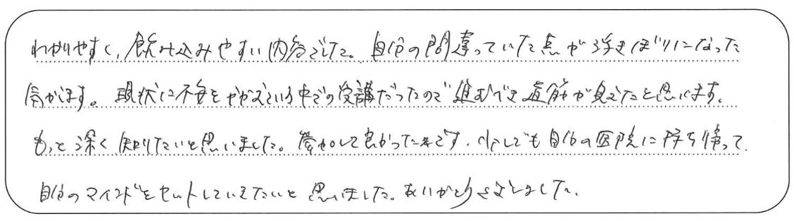
わかりやすく、飲み込みやすい内容でした。自分の間違っていた点が浮きぼりになった気がします。現状に不安をかかえている中での受講だったので進むべき道筋が見えたと思います。もっと深く知りたいと思いました。参加して良かったです。少しでも自分の医院に持ち帰って自分のマインドをセットしてきたいと思いました。ありがとうございました。
大阪府高槻市 開業医 34歳
-
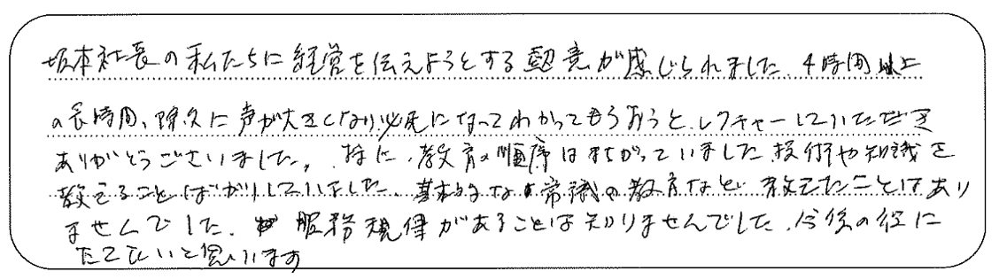
坂本社長の私たちに経営を伝えようとする熱意が感じられました。4時間以上の長時間、徐々に声が大きくなり、必死になってわかってもらおうとレクチャーしていただきありがとうございました。特に、教育の順序はまちがっていました。技術や知識を教えることばかりしていました。基本的な常識の教育など教えたことはありませんでした。服務規律があることは知りませんでした。今後の役にたてたいと思います。
大阪府堺市 開業医 64歳
-
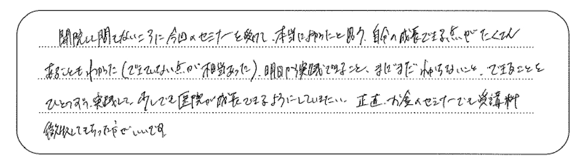
開院して間もないころに今回のセミナーを受けて、本当に良かったと思う。自分の成長できる点がたくさんあることもわかった（できていない点が相当あった）。明日から実践できること、まだまだわからないこと、できることをひとつずつ、実践して、少しでも医院が成長できるようにしていきたい。正直、お金×セミナーでも受講料徴収してもらった方がいいです。
福岡県北九州市 開業医 35歳
-
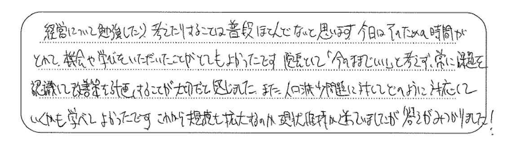
経営について勉強したり、考えたりすることは普段ほとんどないと思います。今日はそのための時間が取れて、機会や学びをいただいたことがとてもよかったです。院長として「今のままでいい」と考えず、常に課題を認識して改善策を計画することが大切だと感じました。また、人口減少問題に対してどのように対応していくかも学べてよかったです。これから規模を拡大するのか現状維持か迷っていましたが答えがみつかりました！
福岡県大野城市 開業医 50歳
-
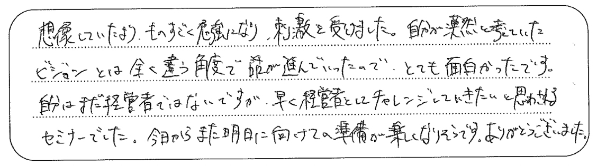
想像していたより、ものすごく勉強になり、刺激を受けました。自分が漠然と考えていたビジョンとは全く違う角度で話が進んでいったので、とても面白かったです。自分はまだ経営者ではないですが、早く経営者としてチャレンジしていきたいと思わされるセミナーでした。今日からまた明日に向けての準備が楽しくなりそうです。ありがとうございました。
神奈川県川崎市 勤務医 31歳
-
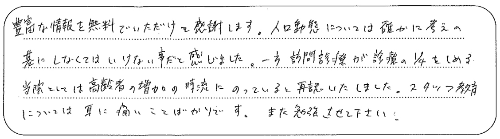
豊富な情報を無料でいただけて感謝します。人口動態については確かに考えの基にしなくてはいけない事だと感じました。一方、訪問診療が診療の1/4をしめる当院としては高齢者の増加の時流にのっていると再認いたしました。スタッフ教育については耳に痛いことばかりです。また勉強させてください。
東京都江戸川区 開業医 42歳
-
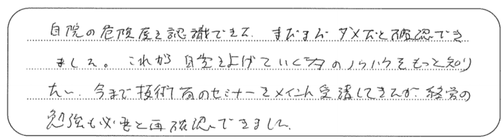
自院の危険度を認識できた。まだまだダメだと確認できました。これから自費を上げていく為のノウハウをもっと知りたい。今まで技術面のセミナーをメインに受講してきたが、経営の勉強も必要と再確認できました。
鹿児島県鹿児島市 開業医 44歳
-
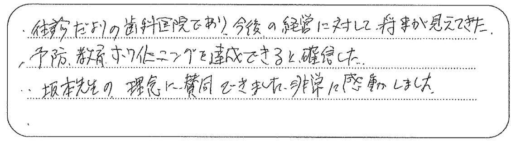
・往診だよりの歯科医院であり、今後の経営に対して将来が見えてきた。
・予防、教育、ホワイトニングを達成できると確信した。
・坂本先生の理念に賛同できました。非常に感動しました。大阪府大阪市 開業医 47歳
-
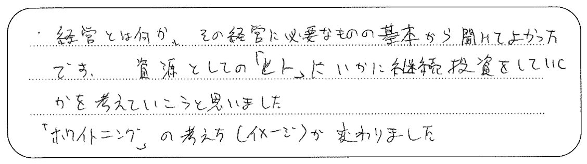
経営とは何か、その経営に必要なものの基本から聞けてよかったです。資源としての「ヒト」にいかに継続投資をしていくかを考えていこうと思いました。
「ホワイトニング」の考え方（イメージ）が変わりました。埼玉県戸田市 開業医 39歳
-
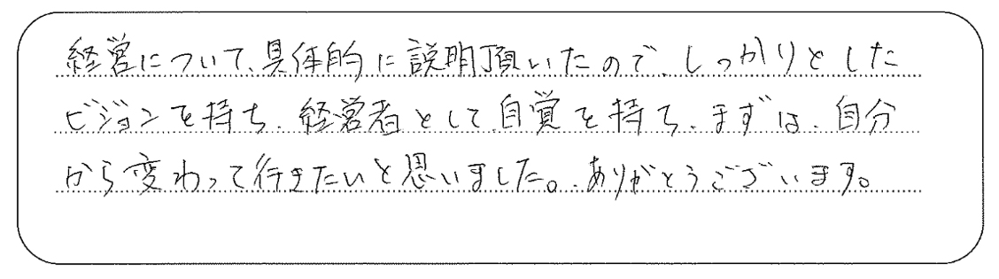
経営について具体的に説明頂いたので、しっかりとしたビジョンを持ち、経営者として自覚を持ち、まずは、自分から変わって行きたいと思いました。ありがとうございます。
広島県広島市 開業医 47歳
ホワイトエッセンスとは
歯と口元を美しく健康にするデンタル
エステサービスを
国家資格者である
歯科衛生士又は歯科医師が提供していく
日本全国に展開する審美歯科チェーンです。
全国200を超える加盟院とともに
健康者が笑顔で歯科医院に通う
文化をつくります。
加盟院数215医院※1
会員数472,794人※2
デンタルエステの症例数
1,952,510件※1
※1 2021年2月1日時点
※2 2020年9月30日時点